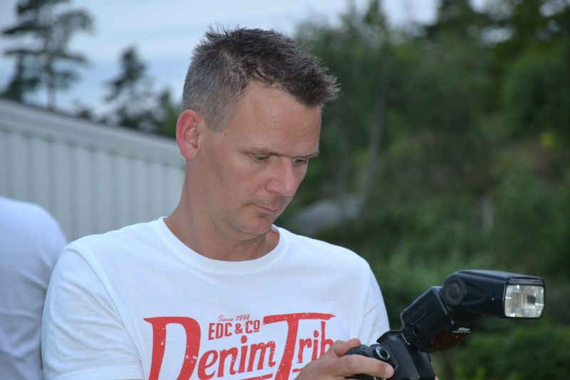

Born in 1973 in the province Drenthe (which is the nicest province in the Netherlands). I still life here, you can say that I'm pretty homebased but I really like to travel in- and outside the Netherlands.
Beside my family are the internet, learning new things, mountainbiking and football my passions.
Qualities
- Social
- Critical
- Enthousiastic
- Energetic
- Eager to learn
- Coach
Front-end working Experience
- Apr. 2014 until now: CSS developer at Zorgweb.
- Dec. 2013 until Feb. 2014: Trainee Front-end developer At SiteGeregeld.
- May 2013 until Oct. 2013: Trainee Front-end developer at Pop a Question.
- 2008 until 2014: Independent WordPress advisor, beside my job as special needs teacher
Writings elsewhere
Workshops I attended
2017
2015
2014
2013
Conferences I attended
2018
2017
2016
2015
2014
2013
Voluntary work